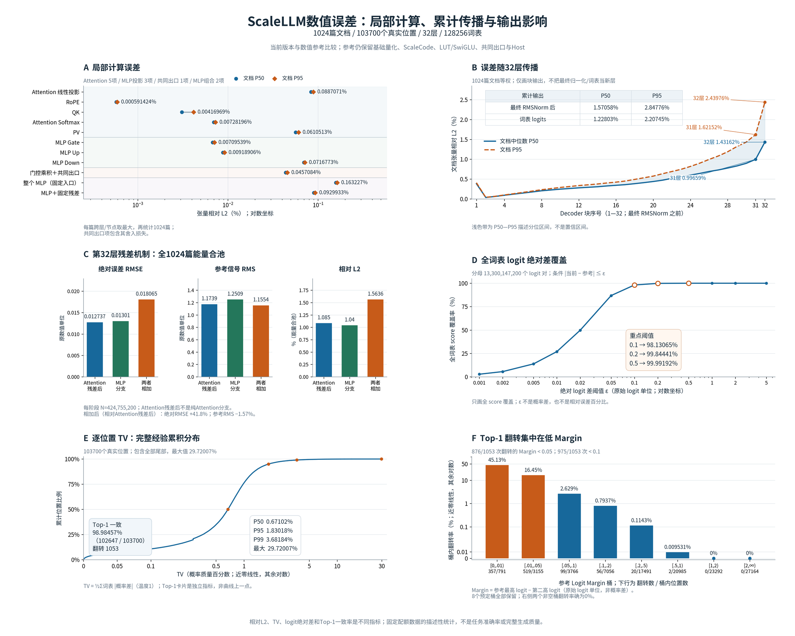
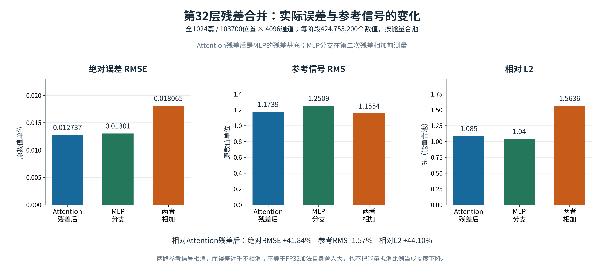
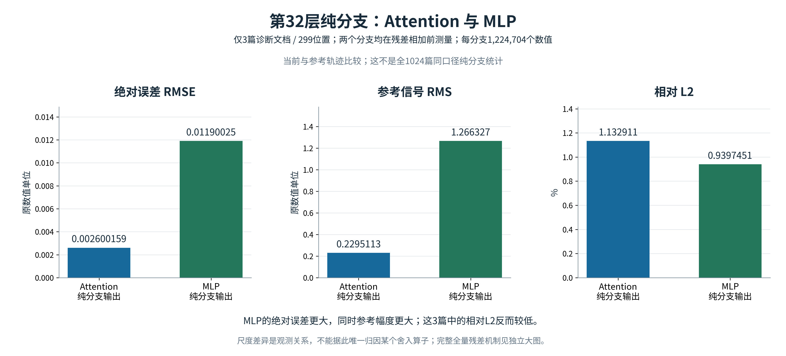

ScaleLLM / 软件数值误差分析
从局部舍入，到32层输出差异
新版把计算节点、聚合方式和误差单位分别标明，用绝对误差与参考信号幅度解释累计相对误差。
全量：1024篇有效位置：103,700解码块：32层词表：128,256
总览：三个层面的证据
局部计算是否接近？
A：相同输入下比较局部计算。每篇跨层或节点取最大值，再统计文档分位数。
差异如何沿网络传播？
B–C：各层输出的实际差异，以及第32层残差相加时误差与信号幅度的变化。
词表输出改变了多少？
D–F：logit覆盖率、概率分布TV、Top-1一致率和按参考Margin分桶的翻转率。
| 比较节点 | 文档中位数 | 文档P95 |
|---|---|---|
| 第32块输出 · 最终RMSNorm之前 | 1.431620% | 2.439764% |
| 最终隐藏向量 · 最终RMSNorm之后 | 1.570580% | 2.847756% |
| 全词表logits | 1.228031% | 2.207453% |


第32层：同时看绝对误差、信号幅度与相对误差
全1024篇合池，三个节点使用相同的103,700个位置与4096个通道。第一项是Attention已经加上残差后的输出。


纯Attention与MLP分支：独立的小规模诊断
仅3篇、299个位置；两者均在各自残差相加之前测量。绝对RMSE与参考RMS一起展示，避免把输出幅度更大等同于相对精度更差。


数据与使用范围
参考计算保留基础量化、查表及共同出口规则。向量相对L2衡量数值差异；Top-1一致率衡量最高分词是否一致，二者均不等于任务准确率。
全量隐藏向量尚无逐token误差分位数及精确余弦相似度，因此本版未绘制这些指标，也未把缺失数据填为零。